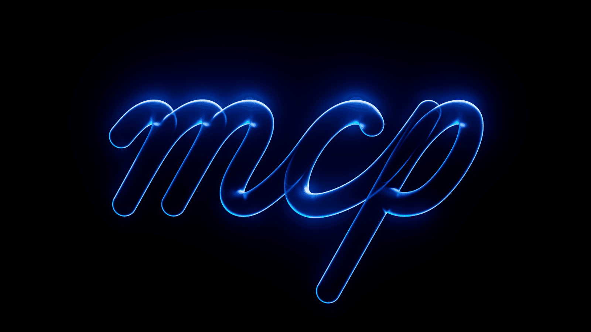
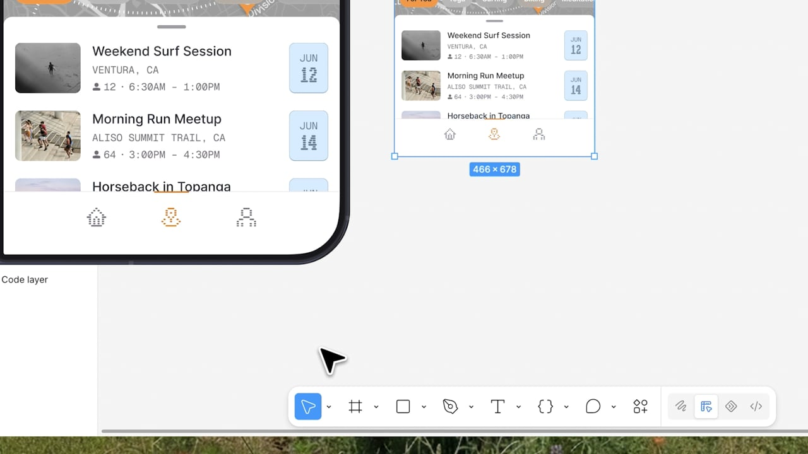
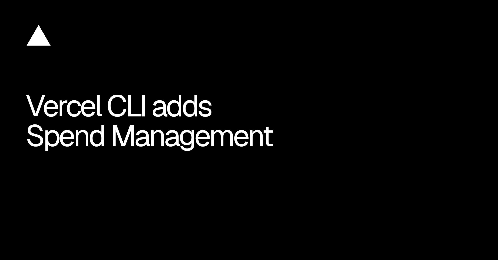
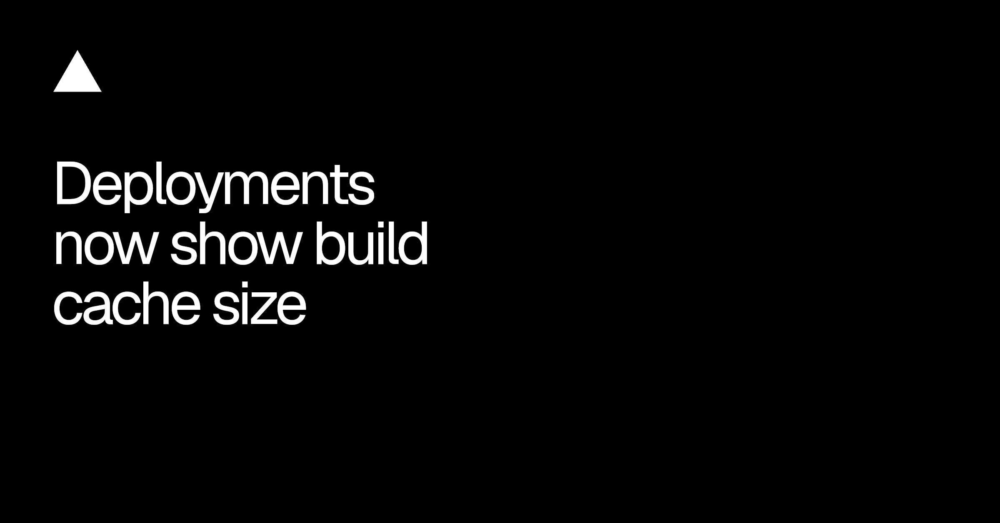
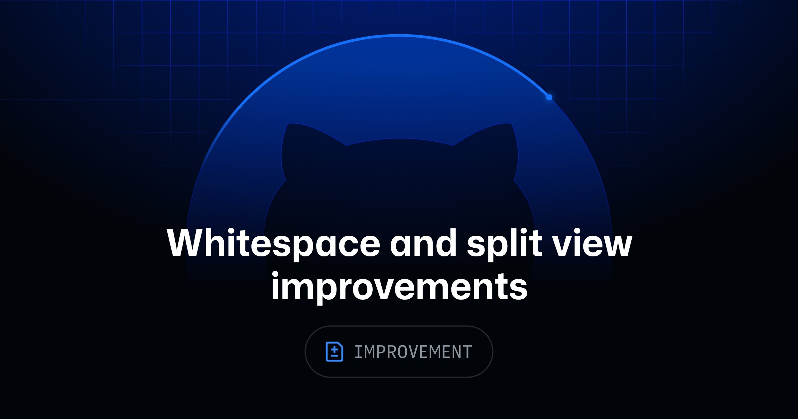
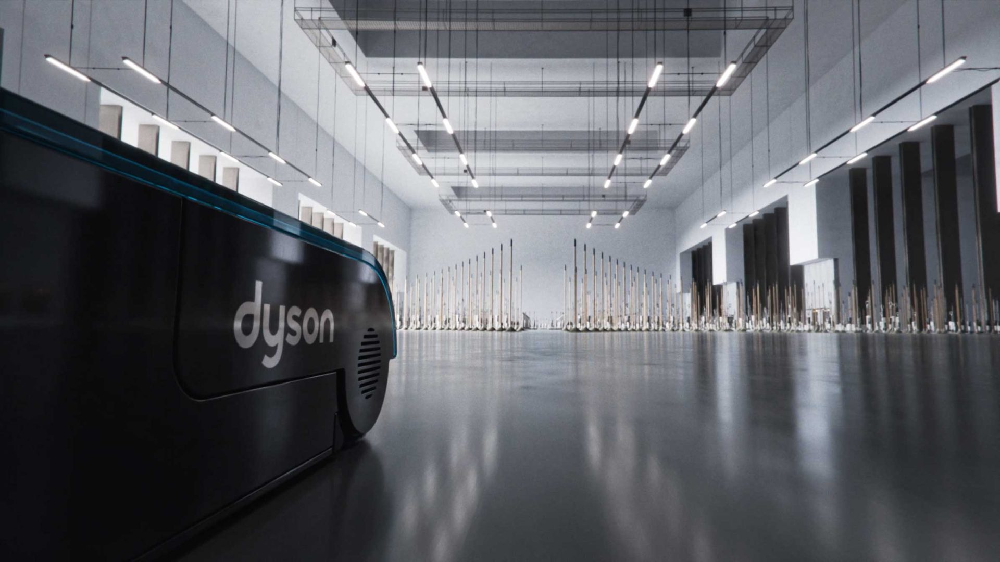

今天几条更新都在补控制面。Figma 把新设备规格和企业权限塞回正式入口，Vercel 把预算、缓存和支付密钥做成可以查询、限制、轮换的状态，GitHub 则继续收拾代码评审里那些每天都要忍的小摩擦。它们没有生成一张更漂亮的图，却直接决定团队能不能把 AI、发布和审查交给更多人。判断工具成熟度时，接下来要多问一句：失控之前，系统有没有把成本、权限和边界摆到台面上。

Framer 在 10 月 22 日发布 MCP，agent 可以直接操作画布、管理 CMS 内容并发布网站；入口不限于桌面端，手机上的 AI 工具也能接。它把此前分散的设计、内容和发布动作，收进同一条 agent 链路。
真正要紧的不是“能画页面”，而是发布也进了权限范围。谁能改 CMS、谁能推线上、失败后回到哪一版，这些不能靠聊天记录兜底。还没拿真实项目实测分支、回滚和多人冲突，先不把它叫作无人值守建站。

Figma 给 iPhone Duo 和 iPhone 18 补了官方 frame preset。它们不只出现在新建画板里，也进入 code layer、prototype settings、Make preview device picker 和 code layer 全屏预览。
这条看起来很小，实际是在堵“设计稿有尺寸、代码预览没尺寸”的口子。新设备不能只加一张空画板模板；安全区、双屏关系、折叠状态和预览设备要共用一套规格。官方这次先把入口接齐了，具体姿态和系统行为仍要回到真机验。
Figma Enterprise 管理员现在可以在组织和 billing group 层设置付费 AI credits 默认值，也能通过 SCIM 给用户配置额度；另外可阻止成员用公司邮箱另开 Starter / Professional 计划，并通过新 Admin REST API 管团队、文件夹和文件。功能正在向 Enterprise 逐步开放。
AI credits 终于不再只是个人按钮旁边的一串数字。预算默认值、身份系统和文件治理被放在同一层，设计团队才有机会把“谁能用、能用多少、产物落在哪”写成政策。这里最该回测的是例外权限：自定义额度覆盖默认值之后，SCIM 更新会不会把它冲掉。

vercel budgets 现在能回读当前支出和预算，CLI 里也能设置、删除预算并查看 alert history。单纯设预算不会停止用量；加上 --pause，支出到 100% 时才会暂停团队所有项目的 production deployments。操作需要 Owner 或 Billing 角色，Pro 和 Flexible Commitment Enterprise 可用。
这一句“预算本身不会停用量”比新命令重要。产品里最危险的成本控件，就是看起来像保险丝，实际只是仪表盘。团队如果真要把 deploy 交给 agent，预算状态、暂停后果和恢复人必须出现在发布界面，而不是藏在账单页。

Vercel 的 deployment summary 现在会显示本次保存的 build cache 大小，以及距离当前 build machine 上限还有多少；同一信息也能从 vercel inspect 65.1.0+ 和 deployment REST API 读取。缓存上传算 billable build time，超过上限会被丢弃，下一次构建直接冷启动。
以前大家只看到“构建突然慢了”，现在终于能看到是哪一包缓存把自己挤出去。对大仓库和视觉站点，这个读数应该和依赖体积、图片处理产物、字体子集一起进构建报告；否则 agent 只会机械地再跑一次。
Vercel Connect 可以为每个 agent 或任务创建独立的 Stripe restricted API key，权限在连接时勾选。Vercel 负责创建和保存密钥，轮换不必重新部署，旧 key 最多保留 24 小时过渡；原有 MCP 和自带 key 方式不变。
日报 agent 只读 charges，onboarding agent 只写 customers，这种拆法才像真正的最小权限。把一把全权 secret 塞给所有任务，界面再漂亮也只是把事故入口做得更顺。接入时别只列 scope，还要把 key 属于谁、何时轮换、旧 key 何时失效一起回读。

GitHub 的 Files changed 会保存 whitespace 可见偏好，临时切换仍可通过当前 filter 完成；变更数量和统计也会跟着当前显示口径更新。新建和删除文件在 split view 中改为占满整行，少一层无意义的左右分栏，长行不再被白白挤窄。
这是典型的“没有发布会，但每天省十秒”。评审工具的质量往往不在 AI 总结，而在过滤条件、统计口径和阅读宽度是否互相解释得通。尤其新文件根本没有旧版本，继续保留空半屏，只是在向组件结构低头。
Nerdo ECD Claus Cibils 这期追问 pitching 到底是投资还是下注。文章用 10 次提案、30% 命中率举例：大约赢 3 次，但 10 次的工时和资源都要自己先付；30% 是说明问题的工作假设，不是所有工作室的行业基准。
这篇最有用的地方，是把“输了也积累关系”后面的账单摊开了。免费竞稿很容易被包装成成长机会，真正被挤掉的是已付费项目、内部作品、培训和业务开发。接外部 motion 项目时，先把 pitch 的人数、天数、交付深度和止损点写进一页表，比复盘时讲心态有效。
视频：Vimeo Playerhttps://player.vimeo.com/video/1238863381?title=0&byline=0&portrait=0｜制作：Optical Arts / Stash 归档https://www.stashmedia.tv/tag/optical-arts/

Dyson Clean+Wash Hygiene 没再走吸力、滚刷、污水槽依次亮相的标准功能表。Optical Arts 先做大量 R&D，再搭出一套能容纳数千把拖把的 CG 连锁反应：每一把都保留真实物理感，同时允许团队重新编排倒下的顺序和镜头队形。
片子的聪明处在于，产品能力只负责启动规则。画面先用整齐队列建立控制感，再让倒塌、碰撞和传递把节奏推起来；低机位、长焦压缩和偶尔的全景负责交代规模。材质没有做成无菌 3D，反而借了模拟摄影的颗粒、曝光和现场感，声音再把每次接触剪成音乐节拍。结果像一支 MV，不像一段功能演示。
产品片不一定要解释五个卖点。挑一个最像“动词”的能力，让它支配对象数量、镜头运动和声音节奏，品牌记忆会更完整。可以先拿“清理、连接、转写、折叠”中的一个词做 12 秒测试；静音后如果还看不出规则如何传递，就别急着堆更多特效。
今日已覆盖主题：Framer MCP、Figma iPhone Duo / iPhone 18 frame presets、Figma Enterprise admin controls、Vercel CLI Spend Management、Vercel build cache size、Vercel Connect managed Stripe API keys、GitHub pull request diff、We Love Pitching Part 22、Optical Arts × Dyson Clean+Wash Hygiene。
今日已覆盖视频：Optical Arts × Dyson Clean+Wash Hygiene，Stash + Vimeo player 1238863381。
今日已覆盖 Stash：Dyson 主卡；Kim Soobin《Together》轻观察；We Love Pitching Part 22 升级为 Articles。
避免重复：FutureDeluxe × Verizon、Ordinary Folk《Distance》、Studio River《R.EVISITED》、Oddfellows × Harvey II、DixonBaxi × ADC 106 已在前几期覆盖，不再用旧批次填满今天。上述 10 月 24 日条目只有出现权限实测、成本数据、回滚证据、真实采用或制作 breakdown 时才再次升级。